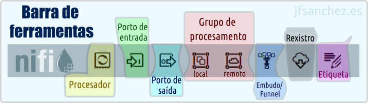

💧 Apache Nifi — 🐜️ Conceptos previos

Apache Nifi é un software adicado a automatizar o fluxo de datos entre sistemas. Tamén pode ser considerado unha ferramenta ETL (Extract/Transform/Load), xa que permite extraer datos de orixes diversas, transformalos e cargalos no seu destino final, todo isto mediante unha interface visual baseada en fluxos (dataflows). Web Oficial: https://nifi.apache.org/
Barra de ferramentas de Apache Nifi
A seguinte documentación foi elaborada empregando a versión: 2.2.0.

Dende esta barra, situada na parte superior do canvas, pódense arrastrar ao lenzo os elementos básicos cos que se constrúe un fluxo de datos:
- Processor: o compoñente principal, encargado de realizar unha tarefa concreta (ler, transformar, enviar datos...).
- Input Port / Output Port: portos de entrada e saída, usados para comunicar grupos de procesamento entre si.
- Process Group: agrupa un conxunto de procesadores e conexións baixo unha mesma unidade lóxica.
- Remote Process Group: permite conectar con outra instancia de Nifi (ou clúster) mediante Site-to-Site.
- Funnel: combina varias conexións de entrada nunha soa saída.
- Template (en desuso a partir da versión 2.x, substituído polo Nifi Registry e os flow definitions).
- Label: etiqueta de texto para documentar visualmente o canvas, sen afectar á execución do fluxo.
Procesadores
Os procesadores son os bloques básicos de construción dun fluxo en Nifi. Cada un realiza unha tarefa concreta (ler un ficheiro, executar unha consulta SQL, transformar un JSON...) e pódense encadear mediante conexións para formar un pipeline de datos completo.
Tipos de procesadores
Poden clasificarse de moitas maneiras, con todo, os máis relevantes poderían resumirse en:
- Inxesta de datos: GetFile, GetFTP, GetKAFKA, GetHTTP, InvokeHTTP, PostHTTP, ListenHTTP...
- Enrutamento: RouteOnAttribute, RouteOnContent, ControlRate, RouteText...
- Base de datos: ExecuteSQL, PutSQL, PutDatabaseRecord, ListDatabaseTables...
- De interacción co sistema operativo: ExecuteScript, ExecuteProcess, ExecuteGroovyScript, ExecuteStreamCommand...
- Transformación de datos: ReplaceText, JoltTransformJSON...
- Extracción de atributos: UpdateAttribute, EvaluateJSONPath, ExtractText, AttributesToJSON...
- Envío de datos: PutEmail, PutKafka, PutSFTP, PutFile, PutFTP...
- División e agregación: SplitText, SplitJson, SplitXml, MergeContent, SplitContent...
Configuración dun procesador
Ao facer dobre clic (ou clic dereito → Configure) sobre un procesador, ábrese unha xanela con varias lapelas:
- Settings: nome do procesador, penalización (penalty duration), tempo de espera en caso de fallo (yield duration) e as relacións que se queren rexistrar automaticamente en caso de non conectalas.
- Scheduling: estratexia de execución (Timer driven, Cron driven ou Event driven), número de tarefas concorrentes e frecuencia de execución.
- Properties: as propiedades propias de cada tipo de procesador (rutas, credenciais, expresións...). Moitas admiten Expression Language (
${atributo}) para facelas dinámicas. - Comments: espazo libre para documentar o procesador.
Estados dun procesador
- Parado → Non se está a executar.
- En execución → Activo, realizando unha tarefa.
- Deshabilitado → Non se pode iniciar a non ser que se active. Útil para modificar a súa configuración sen risco de que arranque por accidente.
- Con erros/advertencias → Falta ou falla algo na configuración (por exemplo unha propiedade obrigatoria sen valor, ou unha relación sen conectar).
Grupos de procesadores/procesamento
Temos un canvas principal no que a orde e a organización son importantes. É recomendable dividir as tarefas complexas en tarefas máis simples, de xeito que se poida ter unha vista lóxica de todo o fluxo dunha soa ollada. As subtarefas máis complexas adóitanse meter nun Process Group (grupo de procesamento), que actúa como unha especie de "caixa negra" que se pode contraer e expandir.
Un grupo de procesamento é, polo tanto, unha colección de procesadores e conexións (e pode conter, á súa vez, outros grupos de procesamento) que se comportan como unha unidade.
É o conxunto mínimo que adoita gardarse no control de versións (Nifi Registry ou un repositorio git), o que permite versionar, comparar cambios e despregar un mesmo fluxo en distintos contornos (desenvolvemento, produción...).
FlowFile
Un arquivo de fluxo, FlowFile ou FF, é a unidade básica de información que circula por Nifi. Pasa os datos entre os diferentes procesadores: é o "paquete" que viaxa polas conexións do canvas, levando consigo tanto o contido como a información que o describe.
Nifi está pensado para traballar en streaming de datos, é dicir, para procesar a información de forma continua a medida que vai chegando, en lugar de esperar a ter un lote (batch) completo antes de comezar a traballar con el. Isto significa que os FlowFiles poden fluír dun procesador a outro practicamente en tempo real, sen necesidade de que os datos estean enteiramente cargados en memoria, o que permite manexar volumes grandes de información e fontes continuas (sensores, colas de mensaxería, logs...) de xeito eficiente.
Cada FlowFile está composto por dúas partes:
- Datos (Content): os datos en si mesmos (por exemplo, o texto dun ficheiro, un rexistro JSON, unha fila dunha táboa...). Almacénanse no Content Repository.
- Atributos/Metadatos (Attributes): pares chave-valor que describen o FlowFile (nome de ficheiro, ruta de orixe, tipo MIME, UUID, marca de tempo, etc.). Almacénanse no FlowFile Repository.
Como obxecto, o FlowFile é inmutable: aínda que o seu contido e atributos poden cambiar ao pasar por un procesador, en realidade o que sucede é que se crea unha nova versión do FlowFile (con novo identificador interno), mantendo así un rexistro completo da súa liñaxe a través do Data Provenance.
Colas e conexións
Unha conexión é o elemento que une a saída dun procesador (ou porto/funnel) coa entrada doutro, e actúa internamente como unha cola (queue) de FlowFiles pendentes de procesar.
Unha conexión pódese asociar a un ou varios tipos de resultado (relacións) dun procesador de orixe, e é posible enrutar eses resultados en función de diferentes condicións.
As condicións (relacións) dunha conexión poden ser:
- Estáticas: veñen definidas polo propio procesador e son sempre as mesmas. As típicas son:
success,failure,retry,response,request,match,unmatch... - Dinámicas: baseadas en atributos dun FlowFile definidos polo usuario, típicas de procesadores como RouteOnAttribute, onde é o propio usuario quen crea as relacións de saída en función de expresións sobre os atributos.
Colas. Limpeza, caducidade de datos
As colas acumulan FlowFiles cando o procesador de destino non é capaz de procesalos á mesma velocidade á que chegan (por exemplo, un procesador de saída máis lento que o de entrada). Tamén se poden acumular datos cando falla unha transformación e quedan FlowFiles pendentes sen poder avanzar no fluxo. Para evitar que unha cola medre indefinidamente ou que se acumulen datos obsoletos, Nifi permite configurar varios mecanismos de limpeza e caducidade.
Accédese á súa configuración con clic dereito sobre a cola → Configure → lapela Settings:
- Prioritizers: determinan a orde en que se extraen os FlowFiles da cola.
- FirstInFirstOutPrioritizer: FIFO, o primeiro FlowFile en entrar é o primeiro en saír (comportamento por defecto).
- NewestFlowFileFirstPrioritizer: prioriza os FlowFiles máis recentes.
- OldestFlowFileFirstPrioritizer: prioriza os FlowFiles máis antigos.
- PriorityAttributePrioritizer: ordena en función dun atributo definido polo usuario.
- FlowFile Expiration: tempo máximo que un FlowFile pode permanecer nunha cola antes de ser descartado automaticamente (por exemplo,
1 hour,30 min...). Útil para evitar que se acumulen datos xa obsoletos tras un fallo nun procesador posterior. - Back Pressure Object Threshold: número máximo de FlowFiles que pode conter a cola antes de aplicar contrapresión (impedir que o procesador de orixe siga escribindo nela).
- Size Threshold: tamaño máximo (en MB, GB...) que pode ocupar o contido da cola antes de aplicar contrapresión.
- Load Balance Strategy: so ten sentido cando hai varios nodos nun clúster; permite repartir os FlowFiles dunha cola entre os distintos nodos (por exemplo,
Round robin,Partition by attribute...).
Controller Services e o seu Scope
Os Controller Services son compoñentes reutilizables que proporcionan funcionalidade compartida a varios procesadores (por exemplo, unha conexión a base de datos (DBCPConnectionPool), un SSL Context Service, un servizo de rexistro (Record Reader/Writer), etc.). Desta forma evítase repetir a mesma configuración (credenciais, conexións...) en cada procesador que a necesite.
Cada Controller Service ten un ámbito (scope) que determina en que nivel está dispoñible:
- A nivel de Process Group: se se crea dentro dun grupo de procesamento concreto, so estará dispoñible para os procesadores dese grupo (e dos seus subgrupos).
- A nivel de Controller (raíz): os servizos definidos a nivel raíz do fluxo (Controller Settings → Controller Services) están dispoñibles para todo o sistema Nifi.
Como calquera outro compoñente, un Controller Service ten os seus propios estados: Enabled (habilitado e listo para usarse), Disabled (deshabilitado, necesario para poder editar a súa configuración) e pode amosar tamén erros de validación se falta algunha propiedade obrigatoria.
Data Provenance
O Data Provenance (proveniencia de datos) é o sistema que permite analizar e rastrexar un FlowFile ao longo de todo o seu percorrido polos distintos procesadores do fluxo. Cada vez que un FlowFile é creado, modificado, dividido, fusionado, enviado ou eliminado, Nifi rexistra un evento de proveniencia asociado, o que permite reconstruír a súa liñaxe completa: de onde veu e por onde pasou.
Estados (tipos de evento)
Cada evento de proveniencia queda etiquetado cun estado ou tipo, que indica que lle aconteceu ao FlowFile nese punto concreto do fluxo. Entre os máis habituais destacan CREATE (creación dun FlowFile novo), RECEIVE (recepción de datos dunha orixe externa), SEND (envío a un sistema externo), CONTENT_MODIFIED e ATTRIBUTES_MODIFIED (cambios no contido ou nos atributos), ROUTE (enrutamento por unha relación concreta), FORK/JOIN/CLONE (división ou combinación de FlowFiles) e DROP (eliminación do FlowFile, xa sexa por caducidade, por descarte manual ou por chegar ao final do fluxo). Grazas a estes estados pódese saber, para calquera FlowFile, a secuencia exacta de pasos e transformacións polas que pasou, o que resulta fundamental tanto para depurar erros como para auditar o tratamento dos datos.
Caducidade en tempo
A información de proveniencia non se garda indefinidamente: ten unha caducidade configurable, tanto en tempo como en tamaño de almacenamento, a nivel de todo o sistema no ficheiro nifi.properties (propiedades como nifi.provenance.repository.max.storage.time ou nifi.provenance.repository.max.storage.size). Isto é necesario porque cada evento xerado (e case calquera acción sobre un FlowFile xera un) ocupa espazo en disco, polo que un sistema con moito volume de datos podería esgotar o almacenamento en pouco tempo se non existise ese límite. Cando se supera o límite de tempo (ou de tamaño) configurado, os eventos máis antigos vanse eliminando automaticamente de xeito rotativo, mantendo sempre dispoñible o histórico máis recente para a súa consulta e descartando o máis antigo.
Estes eventos consúltanse dende o menú Data Provenance (icona da lupa/reloxo na barra superior de Nifi) e pódense filtrar por procesador, tipo de evento, atributo, rango de datas, etc.
Portos
Os portos (ports) son os puntos de comunicación que permiten que os datos entren e saian dun grupo de procesamento, ou que se comuniquen dous fluxos de Nifi distintos mediante Site-to-Site (a través dun Remote Process Group).
O seu único atributo destacable é o nome, xa que é precisamente polo nome (non pola conexión física) polo que se identifican cando se usan a través dun Remote Process Group.
A súa principal utilidade é permitir a comunicación entre grupos de procesamento: en lugar de conectar directamente procesadores situados en grupos distintos (o cal non é posible), conéctase un procesador a un porto de saída do seu grupo, e dende fóra conéctase ese porto de saída a un porto de entrada doutro grupo (ou directamente a un procesador do grupo pai/veciño).
Cada grupo de procesamento pode ter varios portos de entrada e varios portos de saída, cada un cun nome distinto.
Portos de entrada
Un porto de entrada (Input Port) é o punto polo que entran datos procedentes doutro grupo de procesamento (ou dun sistema Nifi remoto, no caso de estar situado no grupo raíz e empregarse vía Site-to-Site). Todo o que se conecte a un porto de entrada quedará dispoñible para os procesadores do grupo no que se atopa ese porto.
Portos de saída
Un porto de saída (Output Port) é o punto de saída/envío de datos cara fóra do grupo de procesamento no que está definido, xa sexa cara a outro grupo do mesmo fluxo ou, se está no grupo raíz, cara a outra instancia de Nifi remota mediante Site-to-Site.
Funnel (embudos)
Un Funnel (embudo) é un elemento moi sinxelo que permite combinar a saída de datos de diferentes conexións nunha soa. É dicir, fai de punto de converxencia: varias conexións de entrada apúntanlle a un único Funnel, e este ten unha única saída (que despois se pode conectar a un ou varios destinos).
Resulta útil, por exemplo, para unificar visualmente o fluxo cando varios procesadores distintos deben acabar enviando os seus datos a un mesmo punto seguinte, mellorando así a lexibilidade do canvas sen necesidade de trazar moitas conexións independentes ata o mesmo destino.
(documento en constante actualización; Claude axudou a completar algúns apartados nesta última versión, pero o contido foi revisado e validado)